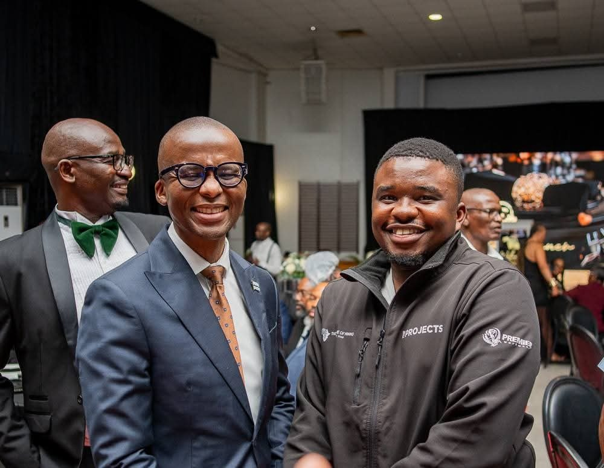
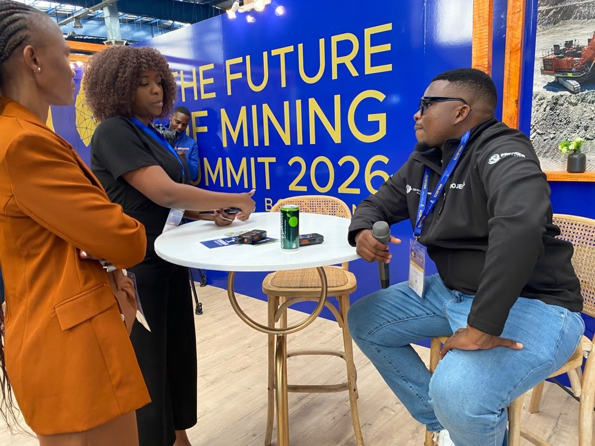
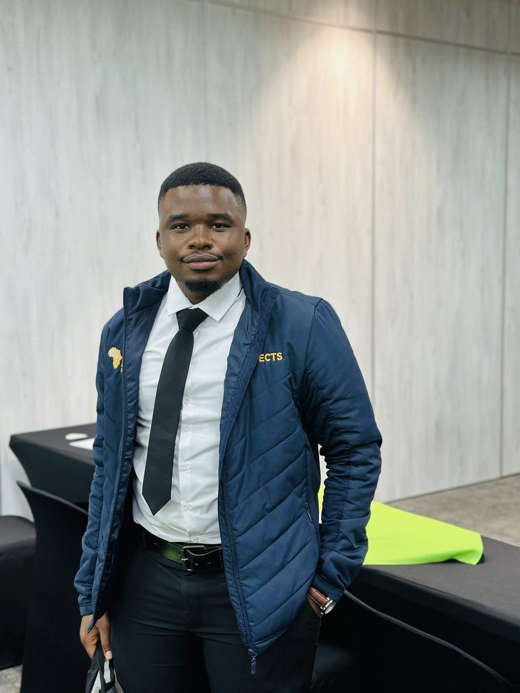

Mapping for Good
Turning satellite data into safer communities
Hello, I'm Lawrence. I am a part-time MSc student in the Department of Environmental Science at the University of Botswana and a part-time Teaching Assistant, teaching GIS to undergraduates. I work with GIS and satellite imagery to answer environmental questions, and I am the co-founder of Neoterra, a Gaborone-based geospatial company. I work in Setswana and English and I'm open to GIS roles, collaborations and new projects, so please get in touch.
Get in touchWhat I Do
Spatial thinking for environmental questions
Spatial Analysis
Turning environmental and field data into clear maps that support decisions.
ArcGIS Pro · QGISRemote Sensing
Processing satellite imagery to detect water, land cover and change over time.
Google Earth EngineTeaching & Building
Teaching GIS to undergraduates, and building geospatial products as co-founder of Neoterra.
Teaching Assistant · Co-founderNeoterra
I co-founded Neoterra, a 100% youth-owned geospatial company in Gaborone. We use GIS, remote sensing and field data to help clients understand the land they work on.
The result is clear maps people can make decisions with.
From Satellite to Map
I use remote sensing and GIS to turn satellite imagery into clear, usable maps: tracking land cover, water and environmental change across Botswana, and sharing those skills with the students I teach.
See what I doGallery

01 / 04
02 / 04
04 / 04Education & Roles
- Now
Co-founder, Neoterra
Youth-owned geospatial company, Gaborone
- Now
MSc, Environmental Science
University of Botswana · part-time · research using GIS and satellite imagery
- Now
Teaching Assistant, GIS
University of Botswana · part-time · undergraduate GIS labs
- Jun to Jul 2023
GIS Analyst (Internship)
Department of Surveys and Mapping, Selebi Phikwe · spatial analysis and environmental mapping in ArcGIS Pro to support renewable energy and land-use planning
- 2020 to 2024
BA, Environmental Science
University of Botswana · GIS and Remote Sensing stream
Let's Work Together
GIS roles, research collaboration, or a conversation about environmental risk.
Jane@neoterra.co.bw